20250818
1. idv(rtx passthrough)
1.1 bios configuration
Disable Internal Graphics(If present):
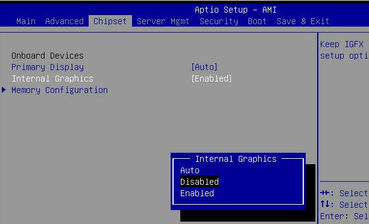

Boot from CD(or external usb disk):

Save and exit, reboot to installation.
1.2 System Installation/Configuration
Choose Install Ubuntu:
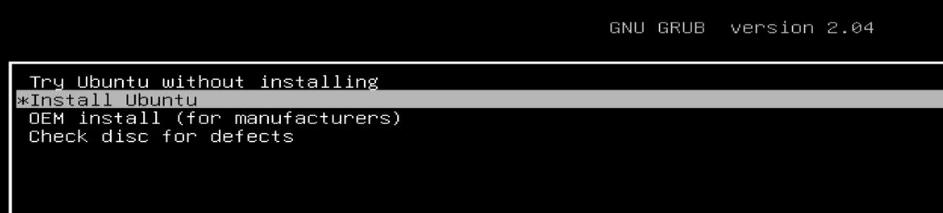
Nvidia card won't work(ubuntu18.04 didn't have the device driver).
Use internal graphical card for installation:

Manually install deriver under installed system:
# ./NVIDIA-Linux-x86_64-580.76.05.run
# reboot
root@idvgen12:~# lspci -vvnn -s 01:00.0 | grep 'Kernel driver in'
Kernel driver in use: nvidia
root@idvgen12:~# lspci | grep -i vga
01:00.0 VGA compatible controller: NVIDIA Corporation Device 2786 (rev a1)
09:00.0 VGA compatible controller: ASPEED Technology, Inc. ASPEED Graphics Family (rev 52)
Change default grub configuration:
# vim /etc/default/grub
GRUB_CMDLINE_LINUX_DEFAULT="quiet splash iommu=pt kvm.ignore_msrs=1 intel_iommu=on intel_iommu=pt video=efifb:off,vesafb:off initcall_blacklist=sysfb_init modprobe.blacklist=ast"
# update-grub2 && reboot
1.3 vfio hooks debugging
adjust for making it workable for nvidia card:
root@idvgen12:~# cat /bin/detectgpu.sh | grep -i nvidia
vgaid=`lspci | grep -i vga | grep -i nvidia | awk {'print $1'}`
reserveid=`lspci | grep -i vga | grep -i nvidia | awk -F ':' {'print $1'}`
/bin/vfio-startup.sh and /bin/vfio-teardown.sh remains the same.
1.4 vm preparation
vm disk preparation:
root@idvgen12:~# mv /home/test/little_win10.qcow2 /var/lib/libvirt/images/
root@idvgen12:~# qemu-img create -f qcow2 -b /var/lib/libvirt/images/little_win10.qcow2 -F qcow2 /var/lib/libvirt/images/nvidia_win10.qcow2
Import disk and generate the vm:
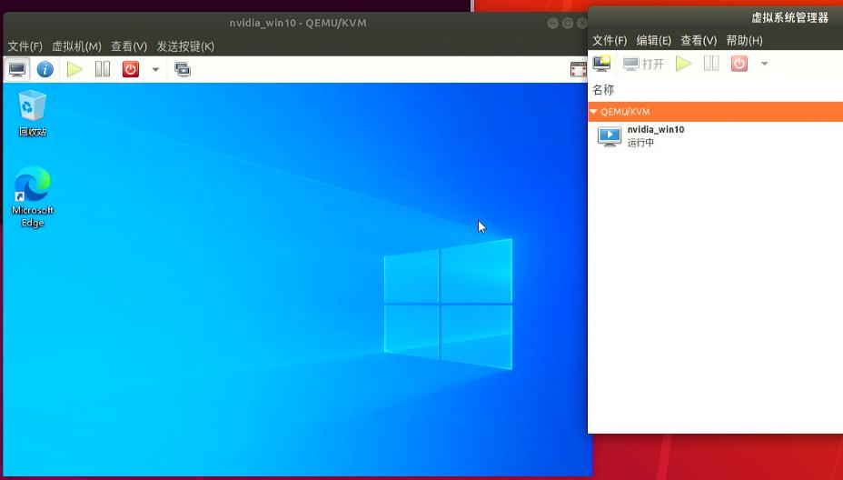
minimum configuration:

Enable remote desktop:

Adjust the processor for setting 12 cores:

12=6core/2threads:
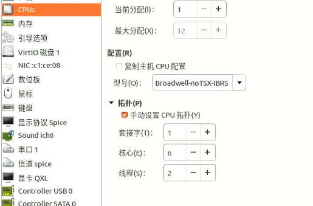
Change to e1000 ethernet card for networking:
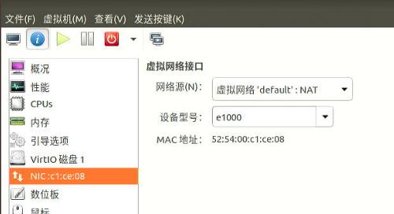
192.168.123.142 for connecting:

1.5 vm adjust.
Add nvidia card, keyboard, mouse:

vfio hook:
root@idvgen12:~# cat /etc/libvirt/hooks/qemu | grep ^INSTANCE
INSTANCE="nvidia_win10"
# systemctl restart libvirtd
# virsh start nvidia_win10
kvm output:
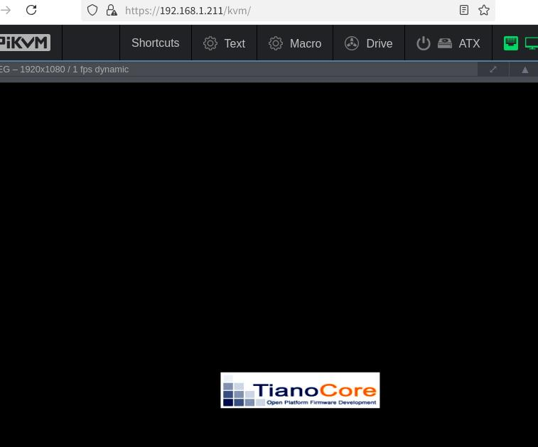
ssh forwarding to windows' remote desktop:
root@idvgen12:/etc/apt/sources.list.d# ssh -L 0.0.0.0:13389:192.168.123.142:3389 test@192.168.1.101
Wait for windows update for updating the system:
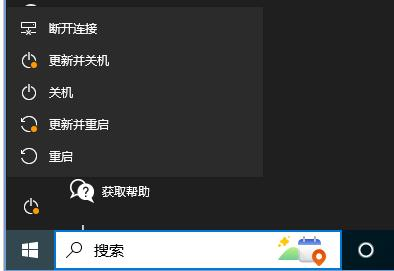
also using virtio iso for updating the system driver
Add the python-qt5 scripts, but this script won't start, until:
usermod -aG libvirt test
Also comment all of the sudo related items under /opt/bgok_close.py.
2. redo nvidia-idv(256G ssd)


rescuezilla clone:
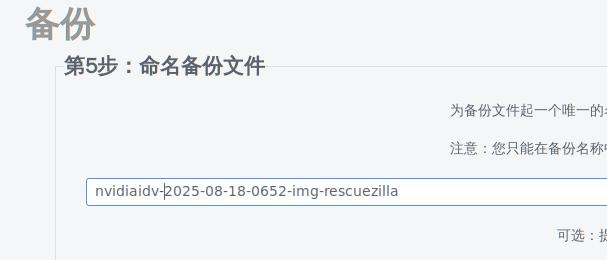
3. rescuzilla
选择语言：

点击还原:
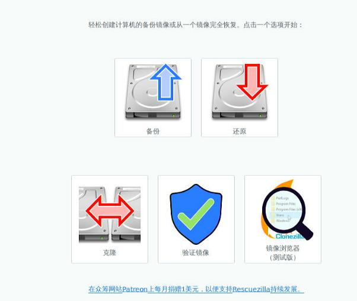
还原镜像所在位置:

选择nvidiaidv-2025-08-18xxxx
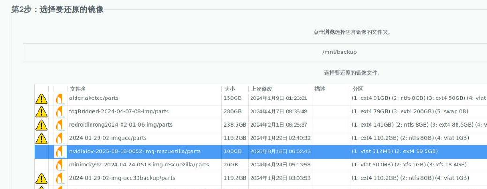
选择需要还原到的硬盘:

保持默认:

点击下一步，并选择确认后开始还原:

还原过程, 并查看其进度:


点击桌面的gparted, 扩充磁盘:
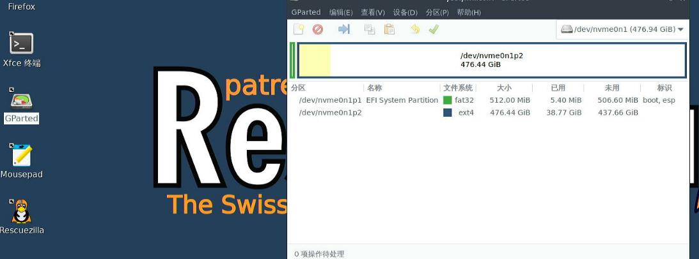
切换到sda:

扩充到100%:
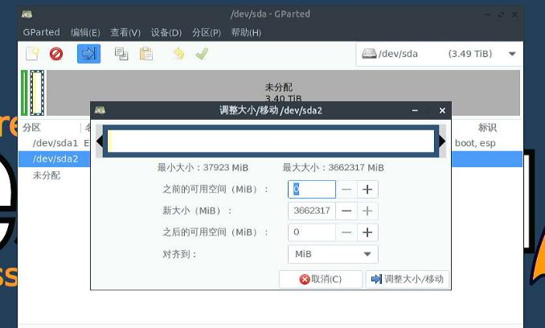
确认应用:

点击关闭后，重启
4. bios for silver

A6000 maybe need passthrough vbt files.